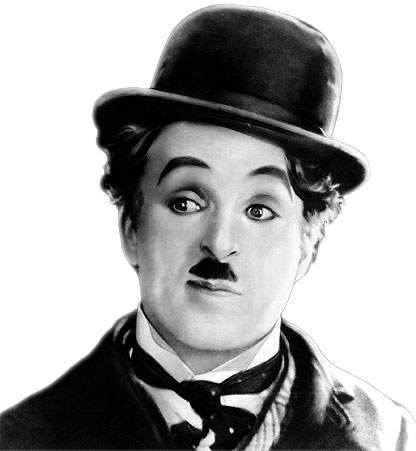

Personajes del cine
El mundo del cine ha sido moldeado por innumerables individuos talentosos y visionarios. Desde directores innovadores, actores carismáticos, guionistas creativos hasta productores audaces, cada uno ha dejado su huella en la industria.
Los hermanos Lumière
Los hermanos franceses Auguste y Louis Lumière son reconocidos históricamente como los precursores de la auténtica cinematografía. En 1895, crearon y diseñaron un aparato conocido como cinematógrafo, que permitía la proyección adecuada de películas en lugares o espacios amplios, dando paso a las modernas salas de cine. Los Lumière realizaron las primeras proyecciones de imágenes en movimiento conocidas en el mundo. Sus primeras películas eran documentales de la época, pero también mostraban aspectos de la sociedad parisina de fines del siglo XIX y principios del XX. Con sus "cortos", intentaron crear un lenguaje narrativo en el cine. El 19 de marzo de 1895, grabaron la salida de los obreros de su fábrica en Lyon, y dos días después presentaron los resultados de sus experimentos en la primera proyección privada de cine en la historia. Algunos meses después, el 28 de diciembre de 1895, se hizo la primera proyección pagada, con público, en la historia. Gracias a los inventos que ingeniaron, se desarrolló lo que actualmente se conoce como las películas del cine moderno. Su contribución al mundo del cine ha sido inmensa y su legado perdura hasta el día de hoy.
Alice Guy
Alice Guy-Blaché es una figura históricamente significativa en el mundo del cine. Nacida en Francia en 1873, se considera que fue la primera persona en dirigir una película de ficción, estableciendo las bases de lo que posteriormente se ha considerado ficción cinematográfica. Guy-Blaché fue una pionera en muchos aspectos del cine. No solo dirigió la primera película de ficción, sino que también fue pionera en el uso de efectos especiales y en la ciencia ficción fílmica. Utilizó técnicas de máscara de doble exposición, filmó secuencias en retroceso y con dobles exposiciones del negativo. Además, fue la primera persona que logró ganar dinero y vivir del cine. Durante su carrera, Alice Guy creó más de 500 películas, de las cuales solo se conservan unas 130. Dirigió comedias, dramas, westerns, musicales, documentales, adaptaciones literarias, y más. A pesar de sus contribuciones significativas al cine, su trabajo fue infravalorado e invisibilizado durante mucho tiempo simplemente por ser mujer. En resumen, la contribución de Alice Guy al cine es innegable. Como una de las pioneras del séptimo arte, su trabajo ha influido en la industria del cine y ha dejado un legado duradero.

Georges Méliès
Georges Méliès, un ilusionista francés, es una figura históricamente significativa en el mundo del cine. Es reconocido por ser el gran creador del cine de espectáculo y fantasía, dando el paso hacia la creación de un lenguaje de ficción para el cine. Méliès fue pionero en el uso de varias técnicas cinematográficas que siguen vigentes hoy en día. Inventó los fundidos a negro y desde negro, y montó el primer estudio cinematográfico, Star Film Company. Además, fue el primero en utilizar el truco de sustitución de elementos mediante el parado de la cámara, y también en la exposición múltiple del negativo. Durante su carrera, Méliès creó más de 500 películas, muchas de las cuales se consideran clásicos del cine mudo. Sus películas más famosas incluyen "Viaje a la Luna" (1902) y "Viaje a través de lo imposible" (1904), que son reconocidas por su imaginación sin límites y su alegría irresistible. En resumen, la contribución de Georges Méliès al cine es innegable. Como uno de los pioneros del séptimo arte, su trabajo ha influido en la industria del cine y ha dejado un legado duradero.
Charles Chaplin
Charles Chaplin, también conocido como Charlie Chaplin, es una figura icónica en la historia del cine. Nacido el 16 de abril de 1889, Chaplin es reconocido por su personaje "Charlot", un vagabundo de aspecto peculiar con bigote y sombrero de copa. Chaplin comenzó su carrera en el teatro a una edad temprana y finalmente se trasladó al cine, donde se convirtió en uno de los actores más reconocidos de su tiempo. Sus películas, principalmente mudas, se caracterizaban por su ingenio, su crítica social y su habilidad para combinar comedia y drama de una manera única. A lo largo de su carrera, Chaplin creó algunas de las películas más memorables de la era del cine mudo, incluyendo "El vagabundo", "Luces de la ciudad" y "Tiempos modernos". A pesar de la llegada del cine sonoro, Chaplin continuó haciendo películas mudas, demostrando su compromiso con el arte del cine mudo. Chaplin no solo fue un actor talentoso, sino también un extraordinario director, productor, guionista, compositor musical y editor. Su influencia en el cine es incalculable y su legado continúa vivo en la industria del cine hasta el día de hoy.

Orson Welles
Orson Welles, cuyo nombre completo es George Orson Welles, es un influyente director, productor y actor estadounidense. Nacido el 6 de mayo de 1915, Welles es mejor conocido por su innovador enfoque en el cine y la radio, así como por su magistral dirección de la película "Ciudadano Kane" (1941), que a menudo se considera una de las mejores películas de todos los tiempos. Welles comenzó su carrera en la radio, donde se hizo famoso por su adaptación de "La guerra de los mundos" de H.G. Wells, que causó un pánico masivo en los oyentes en 1938 debido a su realista presentación. Su debut cinematográfico con "Ciudadano Kane" es conocido por su innovador uso del enfoque, la composición y la narrativa no lineal. A lo largo de su carrera, Welles enfrentó muchas dificultades, incluyendo problemas financieros y conflictos con los estudios, pero su contribución al cine es incuestionable. Su estilo único y su enfoque innovador han dejado una marca indeleble en la industria cinematográfica y han influido en generaciones de cineastas. Welles es recordado no solo por su trabajo en el cine, sino también por su talento en la actuación y la producción, y su legado continúa siendo relevante en el mundo del entretenimiento.